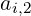

| Up | Next | Prev | PrevTail | Tail |
The user may add new prefix operators to the system by using the declaration operator. For example:
adds the prefix operators h, g1 and arctan to the system.
This allows symbols like h(w), h(x,y,z), g1(p+q), arctan(u/v) to be used in expressions, but no meaning or properties of the operator are implied. The same operator symbol can be used equally well as a 0-, 1-, 2-, 3-, etc.-place operator.
To give a meaning to an operator symbol, or express some of its properties, let statements can be used, or the operator can be given a definition as a procedure.
If the user forgets to declare an identifier as an operator, the system will prompt the user to do so in interactive mode, or do it automatically in non-interactive mode. A diagnostic message will also be printed if an identifier is declared operator more than once.
Operators once declared are global in scope, and so can then be referenced anywhere in the program. In other words, a declaration within a block (or a procedure) does not limit the scope of the operator to that block, nor does the operator go away on exiting the block (use clear instead for this purpose).
An operator declared print_indexed has its arguments displayed as indices, e.g. after print_indexed a; the operator value a(i,2) is displayed as

. You can declare several operators together to be indexed, e.g.and remove indexed declarations using print_noindexed.
| Up | Next | Prev | PrevTail | Front |